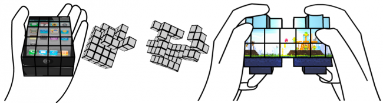

Смартфоны уже давно и прочно вошли в нашу жизнь, став привычным атрибутом любого человека. Но даже сейчас, спустя много лет, они продолжают оставаться прямоугольными, плоскими и чёрными. Но всё может измениться с появлением новых устройств, имеющих возможность менять форму, подстраиваясь под конкретные задачи.
Над прототипом такого устройства работают команды четырёх британских университетов и Google. Разработка называется «Cubimorph» и представляет собой интерактивное устройство, изготовленное из цепочки реконфигурируемых модулей, позволяющих смартфону, например, перевоплотиться из обычного прямоугольного телефона без кнопок в подобие портативной игровой системы.
Не стоит беспокоиться, в головоломку это не превратится. Устройство, согласно задумке разработчиков, будет самостоятельно пытаться выяснить, чего хочет пользователь, а уже затем принимать наиболее выгодную форму. Нужно позвонить — пожалуйста, вот привычный прямоугольный смартфон с сенсорным дисплеем. Поиграть? Устройство примет более подходящую форму.
В данный момент созданы три прототипа, демонстрирующие ключевые аспекты будущего устройства: поворотные петли, встроенные сенсорные экраны и миниатюризацию. Моторизованная система, складывающая «кубики» в нужном порядке, уже сейчас работает не так уж и плохо. Поэтому после её доработки и тестирования разработчикам предстоит заняться более насущными проблемами: уменьшить размер кубиков и сделать бесшовный дисплей. Да, конечно же, ещё нужно придумать, как расположить внутри миниатюрных составных частей всю электронную начинку.
Словом, работы — непочатый край, до полноценного смартфона, умеющего менять форму, ещё очень далеко. И вообще не факт, что всё получится, но посмотреть на текущие результаты уже можно.